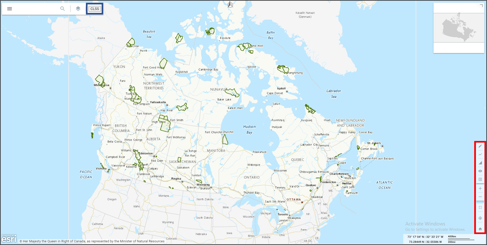
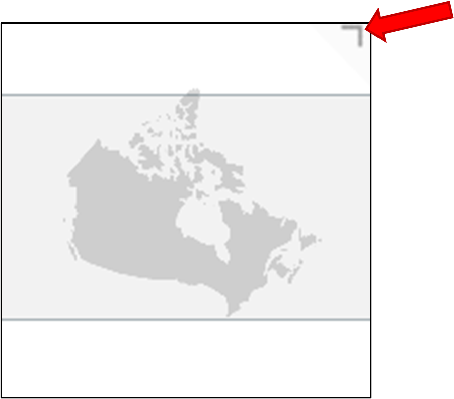

The CLSS RAMP tool has two main functionality sets that the user can use to interact with data in
the map viewer. These are the spatial and attribute query tools. The spatial tools are located on
the right side of the map view and can be used to select and measure features
as well as providing a number of tools for editing the extent/area of interest of the map viewer. The attribute
tool consists of a closable panel that can be used to query the data by using a number of search parameters.
The main functionality discussed above, as well as ancillary functionality, will be described in depth below.

Fig.1 - The blue square outlines the attribute tool, while the red square shows the location of the spatial tools.
Main CLSS Tools
Attribute Tool
The attribute tool has four search types that can be accessed by selecting the hatched button in the top left corner.
All of these options will output the same data but will change the search input options. This will open a side tab that contains the follow search options:
• Protected Area – search by Province/Territory, Parcel and Plan Number.
• Community - search by Province/Territory and Community Name.
• Survey Plan – search by Province/Territory, Canada Lands and Plan Number. This is the search type that the tool defaults to.
• Survey in Progress - search by Province/Territory, Canada Lands and Project Number.
Fig.2 - The red square outlines the button that opens the addition search options list. The blue arrow points to the button the user
clicks to search the inputed search parameters and the green arrow shows the button used to clear the search inputs.
Once the required search inputs are in place and the user clicks the search button a new panel will open that contains a grid populated by the output of the query. There are six tabs at the top of the panel that can
be used to browse different outputs. Some tabs will be empty while others will be populated depending on which search type was used. This is done to make the query faster.
Fig.3 - This is the output panel that is generated whenever a query is made using either the attribute or spatial query tools. Note the tabs at the top that can be
used to view more outputs.
Some of the outputs in the grid will have hyperlinks attached to them. These can be clicked by the user and will do one of two things:
• Change the area of interest and scale of the map view to encompass the parcel if a parcel number is selected.
• Open a new tab to show the information regarding any projects using the plan section of the ‘clss.nrcan-rncan.gc.ca’ site.
If the user wants to close the tab they can either click the ‘x’ button at the top right, which will maintain the query parameters already inputed, or they can select the
reset button on the attribute search panel, which will close the output panel and clear the query parameters.
Spatial Tools
Fig.4 - This shows the buttons of the spatial bar. They include the 'Spatial query' button (blue arrow), the 'Draw line' button (red arrow), the 'Draw polygon' button (green arrow),
the 'Show/Hide distances' button (yellow arrow), the extent controls (purple arrow), the 'Full screen' button (black arrow), the 'Your location' button (orange arrow) and the 'Canada' buttton (hollow red arrow).
Their functionaility is described below.
There are nine spatial tools at the bottom left of the CLSS RAMP viewer. They are as follows:
• Spatial Query: This tool's symbol is a pencil. This is the main tool in the spatial section. It uses an extent draw tool to query the features within a rectangular polygon.
- To use this tool, click the button, then click and hold on the map view where you want to stop drawing and release when you have finished.
- The query will generate the same panel as the attribute query. All of the tabs in the panel will be populated, therefore there are no different search selections.
• Draw Line: This tool's symbol is a zigzag line. This is used to measure linear length.
- To use this tool, click the button, click/release where you want to begin the line and click wherever you want a vertex. When you want to finish the sketch, double click.
- The length of the line will be calculated and displayed in the map view at the end of the line.
• Draw Polygon: This tool's symbol is a triangle. This is used to measure the linear length and area of a polygon.
- To use this tool, click the button, click/release where you want to begin the polygon then click/release wherever you want a vertex. When you want to finish the polygon, double click.
- The length/area of the polygon will be displayed in the centre of the polygon in the map view.
• Show/hide distances: This tool's symbol is a human eye. Clicking this will toggle between the length results of the Draw Line and Draw Polygon tools. If the measurements are
disabled, the tool symbol will change to a human eye with a hatch mark through it.
• Zoom In: This tool's symbol is a plus sign. Clicking it will make the map views extent become smaller.
• Zoom Out: This tool's symbol is a minus sign. Clicking it will make the map views extent become larger.
• Full Screen: This tool's symbol is a four-part square. This will make the map view fill the whole screen.
• Your Location: This tool's symbol is a cross hair. Clicking it will make the CLSS RAMP tool ask for your GPS location.
If you agree, the map views AOI will jump to the present location of your device.
• Canada: The symbol of this button is a home. Clicking it will return the extent/AOI of the map view to encompass all of Canada.
This is the extent that the tool has when it is first opened.
This is in the top right-hand corner of the map view. It shows the extent and location of the map view using a semi-transparent gray rectangle.
If the user wishes to minimise the index map, the arrow in the right hand corner of the index
map can be clicked. The area of interest of the map view can also be changed by clicking/holding the grey box and dragging it to the desired location.

Fig.1 - This figure shows the index map. Note the button to minimize the panel (highlighted in red).
Location Tool
This is the panel at the bottom right of the map view that displays the geographic location of the mouse pointer and the extent of the map.
The top left of the tool displays the mouse pointer location in Degrees, Minutes and Seconds. The lower left
displays the same but in Degrees and Decimal Minutes. The top right shows the extent of the AOI in kilometers while the bottom left shows the same in miles.
Fig.2 - This is the scalebar. The left side shows the mouse pointer coordinates and the right shows the scale.
RAMP Main Application Bar
Fig.3 - This is the bar used to interact with RAMPs main inbuilt functionality. The 'Menu' button (red) opens a panel with more options, the 'Search' bar (blue) allows the user to query spatial features on the basemap and the
'Layer' button (orange) opens a TOC that displays the editable layers open in the tool. All of these are explained in detail below.
Layer Button
This button is used to open a table of contents (TOC) related to the maps that are on display in the CLSS RAMP Viewer. Note that no layers will
be listed by default in the CLSS tool. This is because the layers on display in the tool are built into the HTML page.
Fig.4 - This is the Layer TOC panel. The ‘Add Layer’ button (red) is used to add additional datasets, the 'Toogle Groups' button (yellow) lets you expand/collapse groups of datasets in the TOC view, the 'Basemap' button (blue) allows the user to toggle/change the base map and the
'Toogle Visibility' button (yellow) allows you to have all the layers be visible/invisible in the map view.
However, users can add their own layers into the tool by clicking the ‘add layer’ button (plus sign) on the top-left of the TOC.
• You will then be prompted to browse your files and upload a file from your computer or input a URL. Three files can be used, these are CSV, GeoJSON and zipped Shapefiles. Once a file has been inputted, click the ‘continue’ button.
• Then you must ensure that the correct file format is selected and click continue.
• Finally, you must configure the file before it is added to the TOC.
- You can change the name (it will maintain the original zip name if unchanged)
- set the primary field (this is used to identify the layer)
- the tooltip field (this adds functionality to the mouse hover over tips)
- change to colour to whatever suits you (this is auto-filled and does not require user intervention)
- click continue
Fig.5 - This shows the three steps to import a layer. The steps are discussed above.
The layer will then be added to the TOC. The layers of the map can be turned on/off using the check box,
their settings can be altered using the ‘more options’ button (three dots) and the legend listing the symbology can
be expanded by clicking the ‘expand legend’ button (to the left of the layer name). If the ‘has layer viewable data’
option is active, then the user can see the attributes of the layer by clicking the layer name.
This will open a panel with a grid that will allow the user to perform attribute queries on individual layers.
Fig.6 - This shows the 'Expand legend' button (red), the 'More options' button (blue) and the 'Hide layer' button (yellow). The panel containing the attribute grid that can be opened is also highlighted (green).
Opening the layer TOC will also give the user access to the Base map. To access this, click the ‘base map’ button (three rectangles)
located to the direct left of the ‘expand legend’ button. This will open a panel
listing the three base maps that can be applied in the CLSS RAMP tool. These are:
• The Canada Base Map Transportation (CBMT): This is a basic map highlighting the roads, waterbodies, and populated areas of Canada.
• Canada Base Map – Simple: This is much like the CBMT but only displays the landmasses of Canada as grey and the waterbodies as white. No populated areas or roads are displayed.
• ArcGIS Online – Satellite: This is a mosaic of satellite imagery of Canada.
To activate any of the base maps, simply click on them. More information about the maps can be accessed by clicking the
‘information’ button (circle with an ‘i’) in the bottom right of each map type.
Fig.7 - This shows the Base Map panel that allows the user to select from three base maps. Note that there is also an option to have no base map.
Search Bar
This is the tool marked by the eyeglass button. This is used to search geographic features and populated areas within Canada. The search can be modified by setting the province type and feature type at the top of the search results panel. To remove all search modifiers simply click the ‘clear filter’ button (Funnel with an ‘x’).
Select the feature you want to view in the results list and the AOI of the map view will zoom to the feature.
Menu
This is the button at the far left of the RAMP Main Application Bar (Three horizontal lines). If the user clicks this button, a new panel will appear with more options.
Fig.8 - This is the panel that opens when the user clicks the 'RAMP Main Application Bar'. It shows the 'Layers' button (blue), the 'Basemap' button (red), the 'Full Screen' button (green),
the 'Export' button (black), the 'Share' button (purple), the 'Touch Mode' button (orange), the 'Language' section (grey) and the 'Plugins' section (yellow). The functionality of these buttons is
described below.
Layer
This button is a secondary way to open the layer TOC that was discussed above. All the same functionality is maintained.
Basemap
This button is a secondary way to open the base map panel that was discussed above. All the same functionality is maintained.
Full Screen
This allows the user to make the map view of the CLSS RAMP Tool take up the whole computer screen. The user can also
activate this mode by using the ‘Full Screen’ button in the Spatial Tool section (bottom right of the CLSS RAMP Tool). This is further discussed in the ‘CLSS Tools’ section of this help website.
Export
Fig.9 - This is the export panel that allows users to download PNG maps. It includes a 'Settings' button (red), a 'Title' card (blue), a scale bar (yellow), a north arrow (green), the close/download buttons (orange)
and the annotation (blue arrow). The tool is described below.
This allows the user to export a PDF map of the current extent of the map view. A panel will open showing all the elements that will be exported.
The tool automatically adds a title section that can be edited by the user, a scale bar, and a north arrow. There is also a footnote which describes
the origin place of the map (the CLSS RAMP Tool). All these additions can be toggled on/off using the setting button (cog wheel in top left of panel).
Simply click the download button in the top left when you are done.
Share
Fig.10 - This is the share panel. The hyperlink can be copied and sent to others.
This button opens a panel which contains the weblink of the CLSS RAMP Tool.
You can copy the link and share the tool with others. Note that the extent/set up of the tool will not be maintained.
When the link is opened, it will be a new instance.
Touch Mode
This allows the CLSS RAMP Tool to function with a touch screen.
Note that this will not disable the use of a mouse and keyboard.
Language
This section allows the tool to be toggled between French and English. The selected language will have a checkmark next to it. All the tool tips, outputs and options will change language.
Plugins
This section allows the user to toggle plugins on and off. The CLSS RAMP Tool only has one plugin option,
the ‘CLSS Plugin’. This the ‘Attribute Tool’ which is discussed in the ‘CLSS Tools’ section of this help website.
Toggling this on and off will open and close the panel of the ‘Attribute Tool’. Note that if you close the tool panel using the close button on the panel, the tool can be reopened here.
The purpose of this tool is to allow users to query Canada Lands features, such as reservations,
municipal boundaries, national parks, townships, etc. It also allows users to view completed surveys as well as those that are in progress.
There are two main ways to interact with the data presented in the tool. These is an attribute tool (which allows the user to query the data using names of reservations, plan numbers, etc.)
and the spatial tool (which allows the user to query using a draw tool). Both are explained in detail in the ‘CLSS Tools’ panel of this webpage.
This is a replacement for the original ‘Canada Lands Survey System - CLSS Map Browser’ tool, currently located
here. This tool is over ten years old and adheres to graphical user interface (GUI)
constraints in place at the time which forced the map view to take up a small area of the screen. The goals of this new tool are to make
the map view the epicentre of the user experience, make the query tools faster and more user friendly and to implement recommendations from people who use the site most
(surveyors and native peoples). The tool and this help document are all in development, currently being at the alpha stage.
Tool Overview
The CLSS RAMP tool is based off the RAMP (Reusable Accessible Mapping Platform) tool developed by Environment Canada. The purpose of the tool is to make an API that agencies can use to develop their own applications.
RAMP uses Node.js and AngularJS, which comprise the viewer, and aspects of the ESRI API, which constitutes the GeoApi. It is built using TypeScript and SCSS. The main difference for the user between the
old CLSS WebMap and the new tools is the increased screen space devoted to the map interface, as well as the use of panels that RAMP relies on.
RAMP uses three types of panels, all of which have been implemented into the tool. These include:
• Dialog - Opens over all other panels and disables all interaction with the viewer (via a transparent backdrop).
- For getting the immediate attention of a user - either to act on the information provided in the panel, or to input information required by you.
• Closable - Has a close button in its header, opens over persistent panels and under a dialog.
- Most common panel type. It has a wide range of uses and allows the user to close it when not needed.
• Persistent - Has no close button in its header, opens under all other panel types.
- For relaying a constant stream of information to the user, such as providing geographic coordinates of a clicked map point.